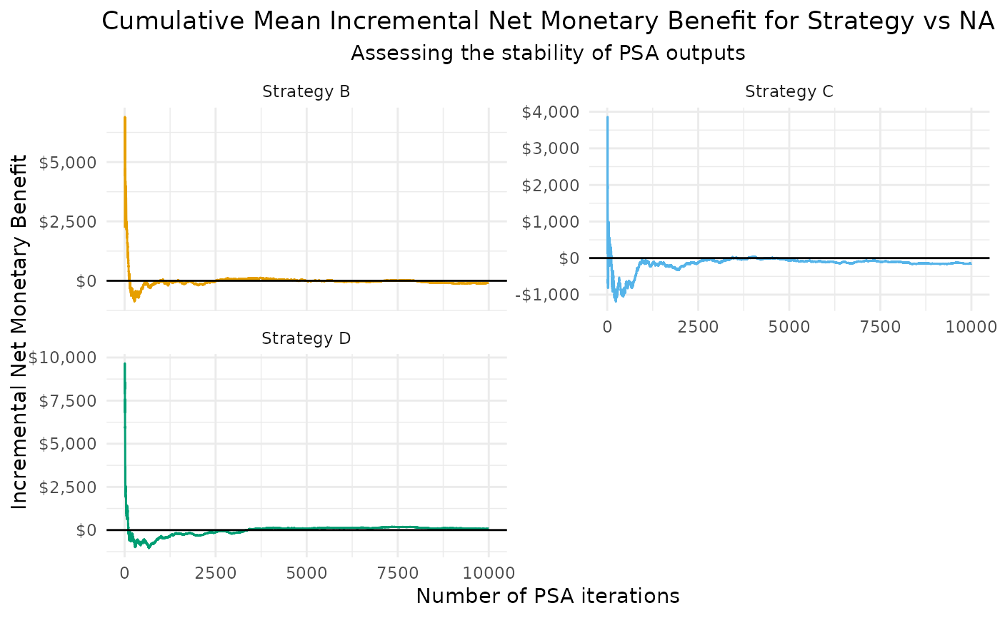

Plot cumulative mean Probabilistic Sensitivity Analysis results
Source:R/check_PSAstability.R
plot_PSA_stability.RdThis function plots the cumulative mean of incremental net monetary benefit (INMB), incremental cost-effectiveness ratio (ICER), incremental costs, or incremental effects for different strategies compared to a specified comparator.
Usage
plot_PSA_stability(
m_eff,
m_cost,
lambda,
currency_symbol = "$",
v_strategy_labels = NULL,
v_strategy_colors = NULL,
comparator = NULL,
output = "inmb",
include_reference_line = T,
log_x = FALSE
)Arguments
- m_eff
Numeric matrix of effects for different strategies.
- m_cost
Numeric matrix of costs for different strategies.
- lambda
Numeric value specifying the willingness-to-pay threshold for ICER.
- currency_symbol
String specifying the currency symbol for y-axis labels.
- v_strategy_labels
Named vector of strategy labels e.g. c("A" = "Strategy A").
- v_strategy_colors
Named vector of strategy colors e.g. c("A" = "#665BA6").
- comparator
Column name representing the comparator strategy (e.g. "A").
- output
String specifying the type of plot, limited to: "inmb", "icer", "costs", or "effects".
- include_reference_line
Logical indicating whether to include a reference line.
- log_x
Logical indicating whether to use a logarithmic scale on the x-axis.
Examples
# create example matrices
n_psa <- 10000
m_eff <- matrix(data = runif(n = n_psa * 4, min = 0, max = 1),
nrow = n_psa,
ncol = 4,
dimnames = list(NULL, paste0("Strategy ", c("A", "B", "C", "D"))))
m_cost <- matrix(data = runif(n = n_psa * 4, min = 5000, max = 20000),
nrow = n_psa,
ncol = 4,
dimnames = list(NULL, paste0("Strategy ", c("A", "B", "C", "D"))))
v_strategy_colors <- setNames(object = grDevices::palette.colors(n = ncol(m_eff)),
nm = colnames(m_eff))
plot_PSA_stability(m_eff = m_eff,
m_cost = m_cost,
lambda = 20000,
currency_symbol = "\u0024",
v_strategy_labels = colnames(m_eff),
v_strategy_colors = v_strategy_colors,
comparator = colnames(m_eff)[1],
output = "inmb",
include_reference_line = TRUE,
log_x = FALSE)
